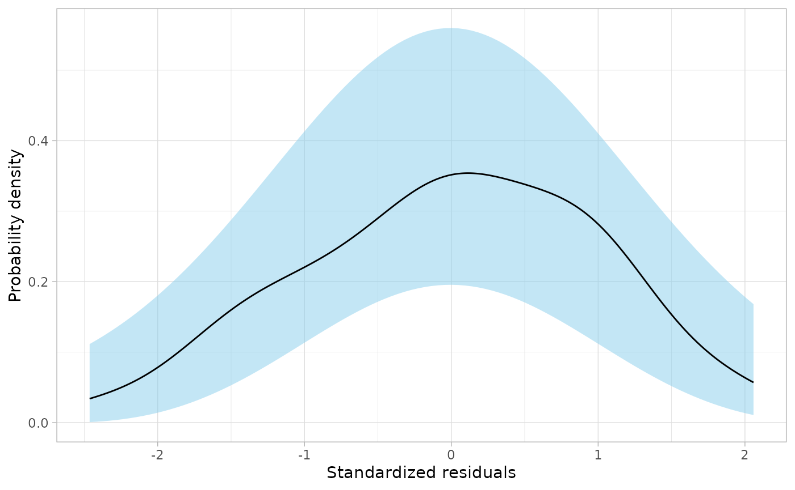
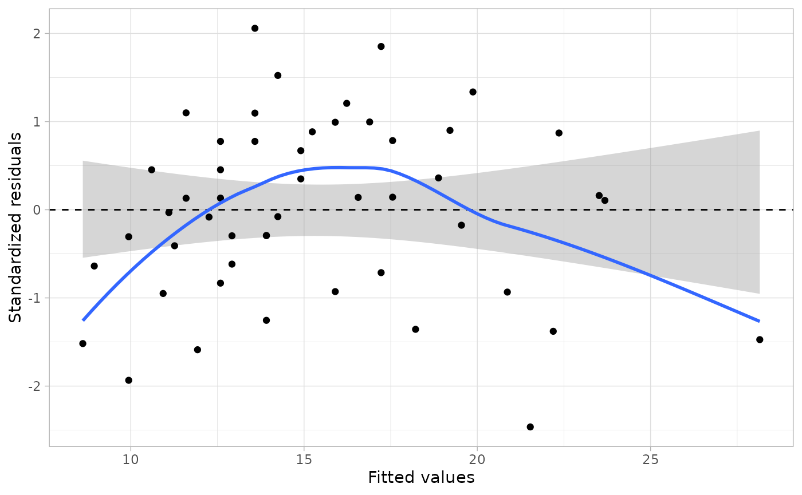

Graphical Evaluation of Residuals
Andrew Zieffler
7/14/2022
Source:vignettes/graphical-residual-evaluation.Rmd
graphical-residual-evaluation.RmdThe educate package includes the
residual_plots() function to generate plots of the
standardized residuals along with confidence envelopes to help evaluate
model assumptions. Below I illustrate the usage of this function.
Evaluate Normality
## Registered S3 method overwritten by 'mosaic':
## method from
## fortify.SpatialPolygonsDataFrame ggplot2
# Fit a linear model
lm.1 = lm(speed ~ dist, data = cars)
# Density plot
residual_plots(lm.1, type = "d")
You need to provide the fitted model object (in the
model= argument; typically unnamed). You also need to
provide the plot type using the type= argument. Here we use
type="d" to obtain the density plot of the standardized
residuals.
Evaluate Linearity and Homoskedasticity
# Load libraries
library(broom)
library(ggplot2)
library(educate)
# Fit a linear model
lm.1 = lm(speed ~ dist, data = cars)
# Density plot
residual_plots(lm.1, type = "s")## `geom_smooth()` using formula = 'y ~ x'
## `geom_smooth()` using formula = 'y ~ x'
Here we use type="s" to obtain the the scatterplot of
the standardized residuals versus the fitted values.
Both Residual Plots
# Load libraries
library(broom)
library(ggplot2)
library(educate)
library(patchwork)
# Fit a linear model
lm.1 = lm(speed ~ dist, data = cars)
# Both residual plots
residual_plots(lm.1, type = "b")## `geom_smooth()` using formula = 'y ~ x'
## `geom_smooth()` using formula = 'y ~ x'
# residual_plots(lm.1)To obtain both plots requires that the patchwork
package is loaded. Here we use type="b" to obtain both the
density plot of the standardized residuals, and the scatterplot of the
standardized residuals versus the fitted values. You can also omit the
type= argument, since the default is
type="b".